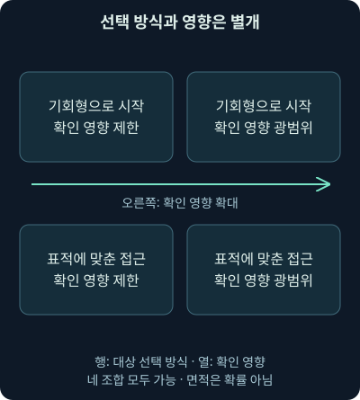
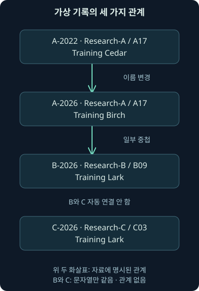
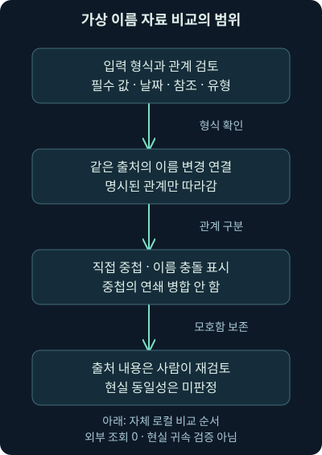

기회형·표적형 공격과 위협 그룹 이름 해석
첫째 날20강. 기회형·표적형과 피해 범위를 분리하고, 현재 이름 체계·출처별 군집·관련 이름의 중첩을 자체 자료로 검토합니다.
1. 같은 경보인데 무엇을 먼저 확인할까요?
앞 강의에서는 공격자의 목적과 역할을 나누어 보았습니다. 국가와 연계된 활동인지, 돈을 벌려는 활동인지, 내부 권한을 악용한 것인지에 따라 조사 질문이 달라졌지요. 이번에는 두 가지 질문을 더 붙여 보겠습니다. “어떤 기준으로 우리를 골랐을까?”와 “보고서에 나온 이름이 정확히 무엇을 가리킬까?”입니다.
가상의 회사에서 인터넷에 공개한 서버로 비슷한 요청이 여러 번 들어왔다고 해봅시다. 다른 회사에도 똑같은 요청을 보내던 중 우연히 우리 서버를 발견했을 수 있습니다. 반대로 우리 회사의 사업과 시스템을 미리 조사한 뒤 보낸 요청일 수도 있습니다. 요청 한 줄만으로 둘을 가를 수는 없습니다. 그런데도 처음부터 유명한 공격 그룹의 이름을 붙이면, 다음 증거를 그 이름에 맞추어 읽기 쉽습니다.
이번 강의의 범위는 공격 대상의 선택 방식, 그 방식과 실제 피해의 차이, 보고서마다 다른 활동 집단 이름의 해석입니다. 작은 자체 자료를 비교하는 실습까지 연결합니다. 다음 강의의 실제 사건 사례를 읽기 전에 갖추어야 할 판단 도구라고 생각하시면 됩니다. 사건의 역사와 대응 결과는 다음 범위에서 따로 살펴봅니다.
2. 문마다 손잡이를 돌려 보는 경우와 특정 집을 찾아오는 경우
동네의 여러 문을 차례로 확인하는 사람과 특정 집의 출입 시간을 알아보고 찾아온 사람을 떠올려 보세요. 앞의 경우는 쉽게 들어갈 수 있는 대상을 넓게 찾고, 뒤의 경우는 먼저 정한 대상을 위해 방법을 고릅니다. 네트워크에서도 이와 비슷한 차이를 생각할 수 있습니다.
기회형 공격은 넓은 후보 중 접근하기 쉬운 시스템이나 반응하는 사용자를 찾아 기회를 이용하는 방식입니다. 영어로 opportunistic이라고 부릅니다. 표적형 공격은 특정 조직·사람·산업·자료 같은 목표를 정하고 그 목표에 맞추어 접근하는 방식입니다. 영어 targeted는 대상을 겨냥했다는 뜻이지요. 표적을 한 사람으로만 제한하거나, 기회형을 모든 인터넷 주소에 대한 공격으로만 제한할 필요는 없습니다.
비유와 실제가 달라지는 부분도 있습니다. 공격자는 자동화 도구로 매우 넓은 대상을 살필 수 있고, 처음에는 넓게 찾았어도 유용한 조직을 발견한 뒤 그 조직에 맞추어 행동할 수 있습니다. 따라서 이것은 평생 바뀌지 않는 공격자 성격표가 아닙니다. 어느 시점의 어떤 활동을 설명하는지를 함께 적어야 합니다.
3. 대상 선택과 피해 규모는 서로 다른 축입니다
그렇다면 기회형이면 피해가 작고, 표적형이면 회사 전체가 위험할까요? 그렇지 않습니다. 대상을 고른 방식과 실제 영향을 받은 범위는 따로 확인해야 합니다. 무작위로 찾은 서버가 중요한 인증 정보를 가지고 있었다면 그 뒤의 피해가 커질 수 있습니다. 오랫동안 준비한 특정 자료 접근이 권한 경계에서 막혔다면 확인된 피해는 제한적일 수 있고요.
아래 그림은 네 가지 조합이 모두 가능함을 보여주는 자체 개념도입니다. 칸의 크기는 빈도나 확률을 뜻하지 않습니다. 위에서 아래로는 선택 방식, 각 행의 왼쪽에서 오른쪽으로는 확인된 영향 범위가 달라집니다.

오래된 설명에서 기회형을 단일 단말의 작은 문제, 표적형을 조직 전체의 최우선 문제로 곧바로 연결하는 도식은 그대로 사용하지 않습니다. 이번 강의에서는 선택 방식의 가설과 자산·권한·업무 영향의 관측을 분리합니다. 이 구분이 우선순위 판단을 더 정확하게 만들어 줍니다.
4. 넓게 접근할 때 나타날 수 있는 흔적
기회형 활동을 생각할 때는 공격 방법보다 먼저 선택에 사용한 조건을 물어보세요. 인터넷에 서비스가 열려 있었는지, 비슷한 기술을 사용하는 여러 조직에 같은 메시지가 도착했는지, 특정 제품의 노출 여부를 넓게 확인했는지가 단서가 됩니다. 인터넷 주소나 서비스 응답을 살펴보는 스캔은 이 과정에 쓰일 수 있습니다. 다만 스캔 자체가 모두 악성이라는 뜻도, 스캔이 성공적인 침입이라는 뜻도 아닙니다.
여러 사람에게 거의 같은 유인 메일을 보내고 반응한 사람을 다음 단계로 이끄는 방법도 있습니다. 피싱은 신뢰할 만한 상대나 상황처럼 꾸며 정보를 입력하거나 행동하도록 유도하는 방식입니다. 사람의 판단을 이용하는 더 넓은 범주의 속임수를 사회공학이라고 부릅니다. 맞춤 표현이 적은 대량 메일은 넓은 접근이라는 가설을 지지할 수 있지만, 한 회사에서 메일 몇 개만 본 상태로 전체 발송 범위를 확정할 수는 없습니다.
웹사이트 방문을 계기로 악성 파일이나 취약한 구성 요소를 이용하려는 시도는 흔히 drive-by라는 표현과 연결됩니다. 방문만으로 항상 실행되는 것은 아닙니다. 브라우저·운영체제의 조건, 사용자의 추가 행동, 보안 통제에 따라 결과가 달라집니다. 가짜 보안 경고로 프로그램 설치나 결제를 유도하는 이른바 가짜 백신도 이 범위에서 생각할 수 있습니다. 경고 화면을 봤다는 사실과 파일 실행·권한 획득·정보 반출은 각각 다른 확인 항목입니다.
패킷에서는 여러 목적지로 향한 유사 요청, 웹 연결, 파일 전송의 일부를 볼 수 있습니다. 하지만 암호화된 통신 안의 유인 문구나 단말에서의 실제 실행은 그 패킷만으로 알기 어려울 수 있습니다. 메일 원본, 웹 프록시, 브라우저와 단말 보안 기록, 서버의 요청 처리 기록을 맞추어야 다음 단계로 넘어갈 수 있습니다.
5. 우연히 확보한 자원도 다른 공격의 재료가 됩니다
“우리 회사에는 훔칠 비밀이 없는데 왜 공격할까요?”라는 질문이 자주 나옵니다. 공격자는 자료 외에도 서버의 처리 능력, 인터넷 연결, 주소의 평판, 계정과 접근 권한을 이용할 수 있습니다. 회사의 작은 서버도 다른 대상에게 접근하기 위한 중간 자원이 될 수 있는 것이지요.
공격자가 여러 장치를 원격으로 통제하는 집합을 봇넷이라고 합니다. 각각의 장치가 한 대씩 별도로 행동하는 것처럼 보여도 지시 체계로 연결될 수 있습니다. 봇넷의 자원은 스팸 발송이나 분산 서비스 거부 공격, 악성 콘텐츠 제공 등에 쓰일 수 있습니다. 악성 목적의 이름 해석에 쓰이는 DNS 기반 시설이나 접근권 판매의 발판이 될 수도 있습니다. 모든 봇넷이 이 일을 전부 한다는 뜻은 아닙니다.
여기서 DNS는 이름을 주소 같은 정보로 연결하는 체계입니다. 정상적인 회사 서버에도 DNS 통신은 많습니다. 따라서 “DNS가 보였다”는 이유로 봇넷이라고 판단할 수 없습니다. 누가 어떤 프로세스로 어떤 이름을 조회했는지, 응답 후 어느 주소에 연결했는지, 그 활동이 정상 역할과 맞는지를 살펴야 합니다. 리졸버는 이런 이름 조회를 대신 처리하는 서버이며, 그 기록이 패킷의 빈칸을 메우는 데 도움이 됩니다.
처음에는 폭넓게 얻은 접근을 다른 범죄자에게 넘기고, 그 다음 운영자가 회사에 맞춘 정보 수집과 협박을 진행할 수도 있습니다. 앞 강의의 접근권 중개와 역할 분담이 이 지점에서 연결됩니다. 초기 유입을 기회형으로 추정했다고 해서 이후 조직 내부 조사까지 낮은 우선순위로 묶어 두면 안 됩니다.
6. 표적에 맞춘 접근은 어떻게 다를까요?
표적형 활동에서는 특정 업무와 사람에 맞춘 흔적을 찾아봅니다. 예를 들어 공개 자료만으로는 알기 어려운 진행 중인 계약 내용, 실제 협력사의 대화 맥락, 필요한 승인 시점에 맞춘 요청이 있다면 추가 조사가 필요합니다. 그래도 이름이나 직책이 맞다는 이유만으로 정교한 침입을 확정할 수는 없습니다. 공개된 소개 페이지에서 가져온 정보일 수도 있고, 자동으로 개인화한 대량 발송일 수도 있습니다.
특정 수신자나 업무에 맞춘 피싱을 스피어 피싱이라고 합니다. spear는 창을 뜻하며 대상을 겨냥한다는 비유입니다. 워터링 홀은 표적이 방문할 법한 사이트를 이용해 접근하려는 방식입니다. 물을 마시러 모이는 장소에서 기다리는 모습에 빗댄 표현이지요. 특정 웹 방문이 있었다는 사실만으로 사이트가 변조되었거나 그 방문자가 감염되었다고 결론낼 수는 없습니다.
물리적 접근이나 USB 저장장치, 외부에 노출된 서비스의 결함, 신뢰하던 공급업체·소프트웨어 전달 경로도 조건에 따라 접근 경로가 됩니다. 공급망은 필요한 제품과 서비스를 제공하는 연결 관계이고, 공급망 공격은 그 신뢰 관계나 전달 경로를 악용하는 경우를 말합니다. 제품 이름이 보고서에 등장했다고 해서 그 제품을 사용하는 모든 조직이 피해를 입었다는 뜻은 아닙니다.
아직 공개적으로 알려지지 않았거나 대응이 준비되지 않은 취약점과 관련해 제로데이라는 표현을 씁니다. 문맥에 따라 공개·인지·수정 가능성의 기준이 달라질 수 있으므로 보고서의 정의를 확인해야 합니다. 표적형 공격에 제로데이가 반드시 필요한 것은 아닙니다. 이미 알려진 결함, 탈취한 계정, 승인 절차의 약점이 목표에 충분할 수도 있습니다. 이 강의에서는 실제 취약점을 공격하는 명령을 실행하지 않았습니다.
7. APT라는 단어에는 무엇이 더 들어 있을까요?
APT는 Advanced Persistent Threat의 머리글자입니다. 자원과 전문성, 여러 접근 수단, 목적을 달성하려는 지속성과 적응 같은 특성을 강조하는 위협 개념입니다. “특정 사람에게 보낸 메일”과 같은 뜻으로 쓰면 그 개념을 지나치게 넓히게 됩니다.
NIST의 용어집은 관련 자원과 전문성, 여러 경로를 통한 장기간의 목적 추구를 설명합니다. 다만 용어집 안에서도 정의가 유래한 문서와 사용 맥락을 확인하도록 안내합니다. 이번 강의에서 이를 국가 이름을 붙이는 자동 판정 규칙으로 사용하지는 않습니다. 표적성, 지속성, 관측한 기법, 목적에 관한 증거를 따로 기록합니다. 확인일은 2026년 11월 5일입니다. NIST APT 용어와 출처
특히 “APT라는 이름의 보고서와 같은 도구가 있으니 국가 연계 침해가 확실하다”는 추론은 조심해야 합니다. 널리 쓰이는 관리 도구나 공개된 공격 도구는 여러 주체가 사용할 수 있습니다. 도구 일치는 조사할 후보를 제공할 뿐, 행위자의 정체와 침해 성공을 동시에 증명하지 않습니다.
8. 조건을 바꿔 보며 우선순위를 다시 정합니다
다음은 모두 자체 가상 사례입니다. 198.51.100.42에서 portal.example로 유사 요청이 들어왔고 서버는 오류 응답을 남겼습니다. 현재 사실은 해당 시각에 요청과 오류 응답을 관측했다는 것입니다. 넓은 스캔의 일부라는 가설과 특정 서비스 탐색이라는 가설은 추가 자료를 기다려야 합니다. 응답 코드만으로 서버 내부 실행이나 전체 침입 실패를 확정하지 않습니다.
조건을 더해 보겠습니다. 서버 단말 기록에서 웹 서비스 계정이 평소와 다른 파일을 만들고, 이어서 다른 내부 자산의 인증 정보를 읽은 흔적이 확인되었다고 가정합니다. 이때는 최초 요청이 넓은 스캔이었는지와 별도로 권한과 영향 범위를 조사해야 합니다. 반대로 회사 임원에게 맞춘 유인 메일이 들어왔지만 격리되어 전달되지 않은 것으로 확인되었다면, 그 사실과 아직 확인되지 않은 다른 경로를 나누어 적습니다.
| 확인 질문 | 판단에 도움이 되는 자료 | 곧바로 확정할 수 없는 것 |
|---|---|---|
| 여러 대상을 넓게 찾았나? | 수집 범위를 아는 다수 조직·센서의 요청 자료 | 우리 센서 몇 건만으로 전체 발송 범위 |
| 우리 업무에 맞추었나? | 메일 원본, 관련 업무 맥락, 시점 | 이름·직책 하나로 APT 여부 |
| 실제 권한과 영향은? | 서버·단말·인증·업무 처리 기록 | 최초 경로의 명칭만으로 피해 규모 |
| 다른 경로도 있었나? | 메일·프록시·방화벽·리졸버·클라우드 감사 기록 | 한 센서의 검색 결과 없음으로 전체 부재 |
표는 공격을 네 칸으로 끝내기 위한 것이 아닙니다. 각 질문에 필요한 관측 범위를 떠올리는 데 쓰세요. 패킷이 한 방향만 수집되었거나, TLS 암호화로 내용이 보이지 않거나, 파일이 여러 패킷에 나뉘어 재조립되지 않았다면 “안 보인다”의 의미가 달라집니다. 도구 필터와 보존 기간도 함께 기록합니다.
9. 결제 요청에는 다른 이름표보다 업무 맥락이 중요합니다
회사 임원인 것처럼 “지금 바로 송금해 달라”고 요구하는 상황을 생각해 봅시다. BEC는 Business Email Compromise의 약자로, 업무용 메일과 신뢰 관계를 악용해 송금이나 정보 제공 같은 행동을 유도하는 사기 유형을 가리킵니다. 실제 계정을 탈취한 경우도 있고, 비슷한 표시 이름이나 도메인으로 속이는 경우도 있습니다. 임원 사칭이라는 표현만으로 계정 탈취까지 관측했다고 적으면 안 됩니다.
가상의 billing.example 담당자에게 계좌 변경 요청이 도착했다면 발신 표시만 보지 말고 메일 원본과 인증 결과, 로그인·메일함 규칙 변경 기록, 거래처 확인 절차, 실제 승인·송금 상태를 연결합니다. 여기서 거래처 확인은 조직이 정한 별도 연락 경로와 담당 절차를 따르는 일입니다. 메일 안에 새로 적힌 연락처를 곧바로 신뢰하는 것으로 해결되지 않습니다.
이런 접근은 특정 회사의 거래에 맞춰질 수 있지만, 비슷한 사기 문구를 넓게 보낸 뒤 반응한 회사에 맞추어 이어갈 수도 있습니다. 처음부터 기회형과 표적형 중 하나를 사건 전체의 영구 이름으로 고정할 필요가 없는 이유입니다. 조사 시점별로 무엇이 추가로 확인되어 판단이 바뀌었는지를 남겨 주세요.
10. 보고서 이름은 여권 번호보다 연구 노트의 표지에 가깝습니다
이제 이름 문제로 넘어가겠습니다. 서로 다른 연구팀이 비슷한 활동을 보고 각자의 노트에 제목을 붙였다고 생각해 보세요. 한 팀은 특정 악성 프로그램을 중심으로 묶고, 다른 팀은 기반 시설이나 피해 대상의 연결을 중심으로 묶을 수 있습니다. 표지의 이름이 달라도 일부 활동은 겹칠 수 있고, 이름이 같아 보여도 같은 묶음이 아닐 수 있습니다.
활동 군집은 관측한 활동 사이의 관련성을 바탕으로 묶은 분석 단위입니다. 그 군집이 현실의 한 개인, 한 법인, 한 조직도와 정확히 일치한다고 보장되지 않습니다. 별칭은 다른 이름을 뜻하지만, 위협 정보에서 별칭 표는 종종 서로 다른 범위의 활동 사이에 보고된 관련성도 담습니다. 단순한 사람 이름 변경표처럼 처리하면 안 되는 이유입니다.
MITRE ATT&CK은 그룹 항목을 추적하는 활동 군집으로 설명하고, 조직마다 정의가 달라 일부만 겹칠 수 있다고 안내합니다. 그래서 관련 이름 목록인 Associated Groups를 “완전히 같은 집합”으로 해석하지 않아야 합니다. 나열된 기법 역시 공개 보고에 근거한 부분집합이며 모든 능력이나 모든 사건을 뜻하지 않습니다. 2026년 11월 5일 확인했습니다. MITRE 그룹 자료의 범위와 주의점
11. Microsoft의 옛 이름과 현재 이름을 연결할 때
오래된 보고서에는 원소 이름이나 DEV 같은 표기가 나올 수 있습니다. Microsoft는 2023년 4월 18일 날씨를 이용한 명명 체계로의 전환을 발표했습니다. 따라서 오래된 이름을 찾지 못했다고 활동이 사라졌다고 생각할 필요는 없습니다. 옛 이름, 새 이름, 자료의 작성 시점을 함께 확인해야 합니다. 발표 시점은 역사적 사실이며 모든 과거 문서가 새 이름으로 소급 수정되었다는 뜻은 아닙니다. Microsoft의 2023년 전환 발표
2026년 11월 5일 확인한 현재 문서는 날씨 계열 이름과 추적 중인 군집을 나타내는 Storm 번호를 설명합니다. 예를 들어 Blizzard 계열은 Microsoft가 러시아와 연계하여 분류한 활동에 쓰는 체계입니다. 이것을 IP 주소의 국가나 사용자의 국적 판별법으로 바꾸면 안 됩니다. Storm으로 시작하는 이름 역시 이미 모든 성격이 확정되었다는 표시가 아닙니다. 실제 보고서의 분석 범위와 근거를 읽어야 합니다. 현재 Microsoft 위협 행위자 명명 문서
실제 조사 기록에는 출처, 보고서 날짜, 당시 이름, 출처가 제공한 식별자, 관련 이름을 연결한 근거를 보존합니다. 화면 표시 이름을 바꾸더라도 과거 검색에 쓰인 이름을 지워 버리면 이전 경보와 사건을 찾기 어려워집니다. 앞서 배운 지식 관리와 판본 관리가 이름표에도 필요한 셈입니다.
12. 2026년에는 Google의 체계도 다시 확인해야 합니다
오래된 자료에서는 Mandiant의 APT·FIN·UNC·TEMP 같은 표기를 만나게 됩니다. 그 역사적 맥락은 필요하지만, 이를 2026년의 전체 현재 정책처럼 설명하면 안 됩니다. Google Threat Intelligence Group은 2026년 7월 24일 통합된 두 단어 이름 체계를 발표했습니다. 이 페이지는 7월 30일 갱신 내용도 표시하며, 이번 강의에서는 11월 5일 직접 확인했습니다. Google의 2026년 명명 체계 안내
두 단어 중 앞부분은 군집을 구별하는 이름이고, 뒷부분은 동기나 귀속·활동 유형에 관한 분류를 표현합니다. 가령 COMET은 사이버 범죄 범주에 쓰입니다. 기존 이름을 유지하거나 검색할 수 있게 연결하면서 순차적으로 바꾸는 과정도 설명합니다. 따라서 모든 옛 이름이 동시에 폐기되었다거나, 옛 이름으로 작성한 보고서가 무효가 되었다고 읽으면 안 됩니다.
UNC는 아직 분류되지 않은 활동 군집을 위한 표기로 유지됩니다. 여기서 아직 분류되지 않았다는 말은 관측이 전혀 없다는 뜻이 아닙니다. 활동을 추적하면서 성격과 관련성을 더 알아가는 단계라는 뜻입니다. 다른 회사의 이름과 연결할 때도 각 회사가 보는 자료가 달라 정확한 일대일 대응이 드물 수 있다는 안내를 함께 읽어야 합니다.
13. 다른 회사의 체계와 실제 관련 이름을 읽는 법
CrowdStrike는 두 부분으로 된 고유 이름을 사용하는 체계를 설명해 왔습니다. 2022년 5월 31일 설명에서 SPIDER는 금전 목적 범죄 활동에 연결됩니다. 이를 모든 비국가 활동의 접미어라고 확대하면 안 됩니다. 2026년 11월 5일 현재 공개된 행위자 목록에서도 이러한 이름을 확인했지만, 목록 전체의 분류를 한 문장으로 영구 고정하지는 않습니다. CrowdStrike의 2022년 명명 설명, 현재 공개 행위자 목록
옛 자료가 어떤 제작사에는 고정 규칙이 없다고 설명하더라도, 그것을 오늘의 모든 내부·외부 명명 정책에 대한 단정으로 옮기지 않습니다. 우리에게 필요한 것은 여러 회사의 모든 이름을 외우는 일이 아닙니다. 출처가 실제로 어떤 활동을 묶었으며 언제 어떤 관계를 발표했는지를 읽는 습관입니다.
실제 예로 MITRE의 APT28 항목은 G0007이라는 그룹 식별자를 쓰고 Forest Blizzard, STRONTIUM, Fancy Bear, Sofacy 등의 관련 이름을 연결합니다. 현재 Microsoft 문서에서도 Forest Blizzard와 옛 이름의 관계를 확인할 수 있습니다. 이 연결은 보고서 검색의 출발점이지 우리 조직의 사건이 그 그룹에 의한 것이라는 증거는 아닙니다. 또 Sofacy나 Sednit 같은 이름은 보고서에서 그룹과 악성 프로그램 양쪽에 쓰인 경우가 있어 무엇을 지칭하는지 확인해야 합니다. 확인일은 2026년 11월 5일입니다. MITRE APT28의 출처별 관련 이름과 설명
14. 같은 이름, 이름 변경, 일부 중첩은 다릅니다
여기서는 세 관계를 구별해 봅시다. 첫째는 같은 출처가 같은 추적 대상을 이름만 바꾸었다고 명시한 경우입니다. 둘째는 다른 출처의 활동 중 일부가 겹친다고 보고한 경우입니다. 셋째는 문자열만 같은 경우입니다. 이 셋을 하나의 “동일 그룹” 관계로 저장하면 나중에 근거를 복원하기 어렵습니다.
아래 도식은 전부 가상 이름입니다. Research-A가 같은 A17 기록의 이름을 바꾼 관계와, Research-B의 B09 활동과 일부 겹친다는 관계를 다르게 읽어 주세요. Research-C의 같은 표시 이름은 자동으로 연결하지 않습니다. 실선과 점선 대신 화살표 옆의 관계 설명으로 의미를 구별합니다.

논리에서도 차이가 생깁니다. A와 B의 활동이 일부 겹치고, B와 C의 활동이 일부 겹친다고 해서 A와 C까지 겹친다고 보장되지는 않습니다. 학교 동아리 둘이 일부 회원을 공유한다는 말을 생각하면 쉽습니다. 두 겹침이 서로 다른 회원 때문에 생겼을 수 있지요. 일부 중첩을 따라 끝없이 이름을 합치는 자동화는 이 차이를 잃어버립니다.
15. 작은 자체 자료를 먼저 읽어 봅시다
지금부터는 실제 위협 보고서를 흉내 낸 독립적인 가상 교육 자료를 사용합니다. 이름과 출처, 추적 번호는 모두 가상입니다. .example 주소는 설명용이며 실제 조회하지 않습니다. 이 자료는 Microsoft·Google·MITRE·CrowdStrike 제품의 입력 형식이나 API가 아닙니다. 앞 강의의 통합과 자동화 원칙을 작은 비교 작업에 적용하는 예제입니다.
| 기록 ID | 출처와 추적 번호 | 기준 날짜 | 표시 이름 |
|---|---|---|---|
| A-2022 | Research-A / A17 | 2022-06-01 | Training Cedar |
| A-2026 | Research-A / A17 | 2026-08-01 | Training Birch |
| B-2026 | Research-B / B09 | 2026-08-02 | Training Lark |
| C-2026 | Research-C / C03 | 2026-08-03 | Training Lark |
여기서 기록 ID는 파일 안의 한 항목을 고유하게 가리킵니다. 출처의 추적 번호는 그 출처 안에서 대상을 추적하는 값입니다. 날짜는 이 가상 기록의 기준일이며, 공격이 발생한 시각이나 다른 출처와의 동일성이 검증된 날이라는 뜻은 아닙니다. 같은 날짜 형식을 사용해도 값의 의미를 별도로 정의해야 한다는 점을 기억해 주세요.
자료에는 A-2022에서 A-2026으로 바뀌었다는 같은 출처의 이름 변경 관계가 있습니다. A-2026과 B-2026 사이에는 일부 활동의 중첩이 보고되었다는 관계가 있고요. B-2026과 C-2026은 표시 이름이 같지만 둘을 연결한 관계 기록은 없습니다. 이제 무엇을 결과로 내야 할지 손으로 먼저 예상할 수 있습니다.
16. 비교 파일을 실행하면 무엇을 확인하나요?
자료는 가상 비교 자료, 비교 프로그램, 실행과 범위 설명, 해석 메모로 제공합니다. 네 파일을 같은 폴더에 둡니다. Python은 이 예제 코드를 실행하는 언어 환경입니다. 이 강의에서는 Python 3.12.14로 실제 실행했고, 아래 명령은 다른 보안 제품의 명령이 아닙니다.
python compare_names.py comparison.jsonpython은 실행기를 고르고, compare_names.py는 실행할 파일, comparison.json은 읽을 자료 경로입니다. 기본 비교 기준은 A-2026입니다. 프로그램은 입력을 검토한 뒤 같은 출처의 이름 변경으로 명시된 기록을 모으고, 그 묶음과 직접 연결된 일부 중첩 후보를 따로 표시합니다. 이 후보를 다시 따라가 모든 기록을 합치지 않습니다.
실제 기본 실행에서는 같은 출처의 이름 변경 기록이 A-2022와 A-2026으로, 직접 중첩 후보가 B-2026으로 나왔습니다. 또 후보와 같은 표시 이름을 쓰는 다른 기록 C-2026을 따로 알렸습니다. overlap_is_transitive는 false, 즉 이 예제가 중첩 관계를 연쇄 확장하지 않는다는 뜻입니다. real_actor_verdict는 unresolved, 현실의 행위자 동일성은 판정하지 않았다는 뜻입니다. external_lookups는 0이었습니다.
그런데 A17이 같으면 무조건 같다고 보면 될까요? 이 예제도 그러지 않습니다. 같은 출처와 같은 추적 번호, 같은 대상 유형을 가진 기록 사이에 이름 변경 관계가 명시되어 있을 때만 그 연결을 따라갑니다. 숫자나 문자열이 우연히 일치하는 것과 출처가 관계를 선언한 것을 구별하기 위해서입니다. 물론 입력에 잘못된 관계를 적으면 형식 검사를 통과하더라도 잘못된 분석이 나올 수 있습니다. 이 프로그램은 출처 내용의 진실을 검증하지 않습니다.
17. 조건을 바꾸면 결과가 왜 달라질까요?
이번에는 표시 이름만 알고 있다고 해봅시다. 다음 명령의 --label은 이름 문자열로 찾겠다는 선택 조건입니다. 큰따옴표는 공백이 있는 이름 전체를 한 값으로 전달합니다. Python 환경과 명령창에 따라 실행기 경로를 조정할 수 있습니다.
python compare_names.py comparison.json --label "Training Lark"실제 실행 결과는 B-2026과 C-2026 두 항목이 일치하는 ambiguous_label이었습니다. ambiguous는 모호하다는 뜻입니다. 프로그램은 자동 병합을 하지 않았습니다. 이것은 오류로 종료된 것이 아니라 입력 자료에 두 기록이 있다는 정상적인 비교 결과입니다. 사람이 출처와 추적 번호를 더 확인해야 하는 상태를 숨기지 않는 것이 중요합니다.
선택할 기록을 알고 있다면 --record-id B-2026처럼 고유 기록 ID를 지정합니다. 이때 기준 기록 자체는 분명해지지만, 다른 출처와의 현실 동일성이 자동 증명되는 것은 아닙니다. 기준이 B-2026이면 같은 출처의 이름 변경 묶음은 B-2026 하나이고, 직접 중첩 후보는 A-2026입니다. 후보 A의 옛 이름까지 임의로 B의 동일 기록으로 승격하지 않습니다.
추가 시험에서는 B와 C 사이에 일부 중첩 관계를 더한 임시 자료를 사용했습니다. C의 표시 이름도 구별되게 바꾸어 문자열 충돌과 혼동하지 않도록 했습니다. A-2026을 기준으로 한 직접 후보는 여전히 B뿐이었습니다. B를 거쳐 C까지 자동 확장하지 않는 조건을 확인한 것입니다. 원본 배포 자료는 바꾸지 않았습니다.

위 그림은 아래로 읽습니다. 입력 형식이 맞는지 확인한 다음, 허용한 관계만 계산하고 모호함을 남겨 사람이 출처를 검토합니다. 실제 보안 제품이나 외부 보고서 조회를 실행한 흐름이 아닙니다. 이런 작은 예제에서도 입력 검증과 결과 해석을 구분해 두면 자동화가 과도한 결론을 내리지 않게 할 수 있습니다.
18. 아무것도 안 나오면 그 그룹은 없다는 뜻일까요?
이 자료에 없는 이름을 찾으면 no_record_in_this_dataset이 나옵니다. 뜻 그대로 이 자료 안에 해당 기록이 없다는 결과입니다. 실제로 활동이 없었다거나, 우리 회사가 침해되지 않았다거나, 그 이름의 그룹이 존재하지 않는다는 뜻은 아닙니다. 날짜와 출처, 별칭 보존, 자료 수집 범위가 모두 다를 수 있기 때문입니다.
실제 위협 정보 플랫폼에서는 옛 이름 검색 지원, 구분한 대상 유형, 자료의 갱신 날짜, 관계의 출처와 신뢰 수준, 비공개 관측의 부재를 확인합니다. 악성 프로그램 이름을 그룹 이름으로 검색하거나 캠페인 이름을 개인의 이름처럼 취급하면 결과가 달라집니다. 캠페인은 일정한 목적이나 맥락으로 연결된 활동의 묶음으로, 한 그룹이나 프로그램과 항상 일대일 관계인 것은 아닙니다.
코드의 입력 검사도 시험했습니다. 중복된 기록 ID, 없는 기록을 가리키는 관계, 서로 다른 출처를 같은 출처의 이름 변경으로 선언한 자료, 잘못된 날짜·주소·필수 필드·JSON 형식은 오류로 구별합니다. JSON은 필드 이름과 값을 구조화해 적는 자료 형식입니다. 오류로 끝난 경우와 기록이 없는 정상 결과를 혼동하지 않도록 종료 상태도 나눴습니다. 이 검사는 기록 내용의 정확성이나 실제 공격자 귀속을 검증하는 기능이 아닙니다.
19. 실제 사건 메모에는 무엇을 남길까요?
가상 조사 메모를 한 문장으로 써 보겠습니다. “서버에서 관측한 파일과 통신이 보고서의 일부 특징과 일치하나, 보고서의 활동 군집과 동일한 주체인지는 미확인이다. 해당 보고서는 출처 A, 기준일 B이며 관련 이름은 일부 중첩 관계로 기재했다.” 이처럼 무엇을 보았고 어떤 자료와 비교했는지를 남기면 다음 분석가가 근거를 이어받을 수 있습니다.
행위자 이름을 아직 붙이지 못했더라도 서버의 비정상 권한 사용, 자료 접근, 외부 전송과 업무 영향은 조사할 수 있습니다. 이름표가 없다는 이유로 확인된 영향을 미루지 않고, 유명한 이름이라는 이유로 미확인 피해를 확정하지도 않습니다. 관측한 기법과 정상 업무를 구별할 자료, 단말·서버·인증·방화벽·리졸버 기록을 모아 판단을 갱신합니다.
이번 자체 실습은 로컬 파일을 읽고 비교 결과를 출력한 작업입니다. 실제 위협 정보 플랫폼 설치, 보고서 API 호출, 외부 주소 조회, 계정 판정, 차단, 원본 패킷 분석은 수행하지 않았습니다. 다음 강의에서는 이 구분을 유지한 채 실제 공개 사건의 시간 순서와 방어상 의미를 살펴봅니다. 사건의 이름을 외우기보다 어떤 관측과 조건이 결과를 바꾸었는지 따라가 보겠습니다.
20. 복습: 분류와 이름이 결론을 앞서지 않게 합니다
질문 1. 기회형으로 발견된 서버라면 피해는 한 대로 제한되나요?
해설: 아닙니다. 대상 선택과 실제 영향은 별개입니다. 그 서버의 권한·인증 정보·연결 관계에 따라 더 넓은 영향이 생길 수 있으므로 후속 관측이 필요합니다.
질문 2. 임원 이름을 정확히 쓴 메일은 APT의 증거인가요?
해설: 개인화의 단서는 되지만 APT를 확정하지 않습니다. 공개 정보나 대량 자동화로도 이름을 넣을 수 있습니다. 유입 경로·맥락·지속 활동·결과를 함께 조사합니다.
질문 3. 표적형 공격은 제로데이를 반드시 쓰나요?
해설: 그렇지 않습니다. 알려진 결함이나 탈취 계정, 업무 승인 절차의 약점으로도 목적을 달성할 수 있습니다. 실제 관측한 수단을 확인해야 합니다.
질문 4. 오류 응답이 있으면 침입은 완전히 실패했나요?
해설: 그 요청에 대한 응답은 알 수 있지만 서버 내부 처리와 다른 요청·경로까지 보장하지 않습니다. 서버·단말 기록과 수집 범위를 대조합니다.
질문 5. Forest Blizzard라는 이름을 찾으면 예전 STRONTIUM 기록은 지워도 되나요?
해설: 과거 이름과 출처·날짜·근거를 보존해야 과거 사건과 보고서를 검색할 수 있습니다. 표시 이름 갱신과 역사적 기록 삭제는 다른 작업입니다.
질문 6. Google의 현재 명명 설명을 옛 APT·FIN 표기만으로 끝내면 되나요?
해설: 2026년 7월 발표된 두 단어 체계와 순차 전환을 함께 확인해야 합니다. 옛 이름의 검색 연결과 UNC의 유지도 구별하며, 과거 문서가 무효가 되었다고 해석하지 않습니다.
질문 7. MITRE 관련 이름 목록은 모든 회사가 완전히 같은 집단을 본다는 뜻인가요?
해설: 아닙니다. 출처마다 관측 범위와 군집 기준이 달라 일부만 겹칠 수 있습니다. 관련 목록은 출처 검토와 추가 연구의 출발점입니다.
질문 8. A와 B, B와 C의 활동이 각각 겹치면 A와 C도 겹치나요?
해설: 보장되지 않습니다. 서로 다른 활동 부분 때문에 두 중첩이 생겼을 수 있습니다. 일부 중첩을 동일성으로 바꾸거나 연쇄 병합하지 않습니다.
질문 9. 자체 자료에서 Training Lark를 찾았더니 두 기록이 나왔습니다. 하나만 남길까요?
해설: B-2026과 C-2026은 출처와 추적 번호가 다릅니다. 이름 충돌을 보존하고 추가 근거를 찾습니다. 프로그램도 모호함을 표시하며 자동 병합하지 않습니다.
질문 10. 기본 실행의 A-2022와 A-2026 묶음이 실제 동일 행위자를 검증했나요?
해설: 아닙니다. 가상 자료에 명시된 같은 출처의 이름 변경 관계를 계산한 것입니다. 입력의 진실이나 현실 귀속은 검증하지 않았습니다.
질문 11. 자료에 없는 이름의 검색 결과는 침해 부재를 뜻하나요?
해설: 이 자료에 기록이 없다는 뜻입니다. 판본·출처·별칭·대상 유형·수집 범위를 확인하고, 실제 사건은 해당 환경의 관측 증거로 조사해야 합니다.
질문 12. 행위자 이름을 모르면 우선순위도 정할 수 없나요?
해설: 자산 중요도, 확인된 권한 사용과 영향, 진행 중인 업무 피해를 근거로 판단할 수 있습니다. 이름 추정과 영향 조사를 따로 진행하고 새 증거가 나오면 판단을 갱신합니다.